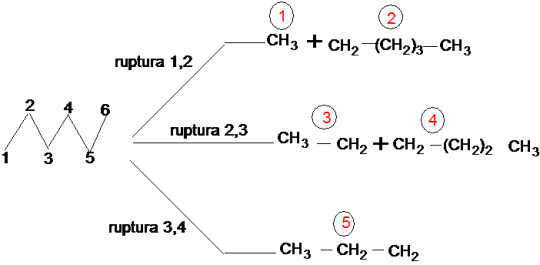
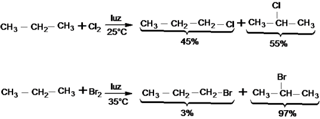

Reaccion de sistesis

Síntesis química es el proceso por el cual se producen compuestos químicos a partir de compuestos simples o precursores químicos.Su rama más amplia es la síntesis orgánica. También es realizada por los organismos vivientes en su metabolismo, como ejemplo están las proteínas.
El objetivo principal de la síntesis química, además de producir nuevas sustancias químicas, es el desarrollo de métodos más económicos y eficientes para sintetizar sustancias naturales ya conocidas, como por ejemplo el ácido acetilsalicílico (presente en las hojas del sauce) o el ácido ascórbico o vitamina C, que se encuentra de forma natural en muchos vegetales.
La respiración celular, proceso utilizado por la mayoría de las células animales y vegetales, es la degradación de biomoléculas (glucosa, lípidos, proteínas) para que se produzca la liberación de energía necesaria, y así el organismo pueda cumplir con sus funciones vitales. Mediante la degradación de la glucosa (glucólisis) se forma ácido pirúvico. Este ácido se desdobla a dióxido de carbono y agua, generándose 36 moléculas de ATP.
También la síntesis química permite obtener productos que no existen de forma natural, como el acero, los plásticos o los adhesivos.
Actualmente hay catalogados unos once millones de productos químicos de síntesis y se calcula que cada día se obtienen unos 2000 más.
El progreso científico ha permitido un gran desarrollo de las técnicas de síntesis química, como la síntesis en fase sólida o la química combinatoria.
Inicialmente estos productos se obtenían de manera casual mientras que, en la actualidad, es posible realizar simulaciones por ordenador antes de experimentar en el laboratorio.
Tipos de Sintesis
Pirolisis
Se produce cuando se calientan alcanos a altas temperaturas en ausencia de Oxígeno. Se rompen enlaces C-C y C-H, formando radicales, que se combinan entre sí formando otros alcanos de mayor número de C.

Combustion
Halogenacion

A continuacion podremos apreciar un video de un experimento facil que muestra este proceso